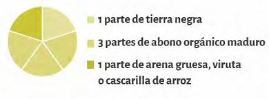
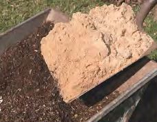
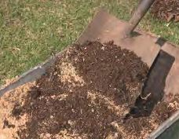
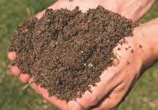

Antes de comenzar
Elementos necesarios
- Sol
- Agua
- Plantines/semillas
Sustrato
Partes del sustrato
Preparación del sustrato
- 1. Mezclar una parte de tierra con una de arena/viruta 
- 2. Incorporar el abono a la mezcla anterior 
- 3. Revolver hasta lograr un sustrato homogéneo 